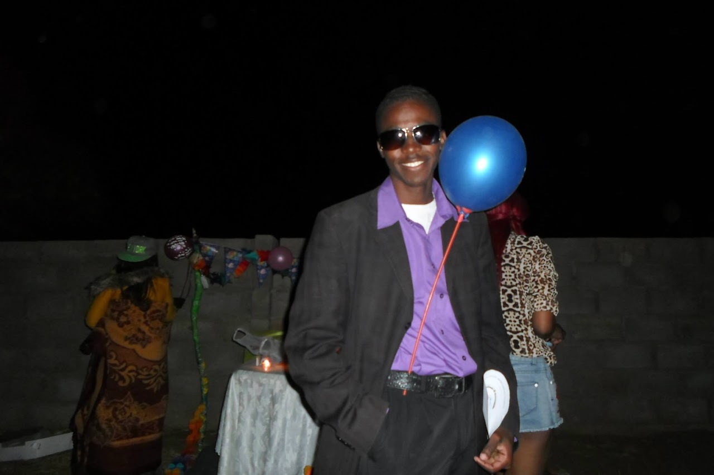

Live → Blog
January 17, 2020

I love this photo of mine from July 2014. I was a Master of Ceremony at a birthday party of someone who at the time was one of my dearest friends. I felt fresh! I almost always do. But of course with the benefit of hindsight, I can see how wrong I was. How could I have thought wearing sunglasses at night was cool? I can understand having them on the head at night as I do now, but to wear them? Back then I braided my hair. How can a sane man torture himself by braiding short hair? Even child birth cannot be as painful! Do not get me started on my fashion choices. But in my defense, my fashion choices were partly influenced by circumstance. That jacket was a hand-me-down from my brother and it was my only jacket. So I could not do any better. Although I will admit with the shirt I could have done better, especially since I bought it that same day. Then, I thought bigger was better. My fashion choices are better now, but nowhere near where I aspire for them to reach. Too bad you might never get to see that since this is most likely my final entry on this blog. As I look back in tears and in joy, I think my life can be described as love and resistance. I write this post grieving the unexpected (and yet unsurprising) ending of a friendship. But as with the items described from this photo, nothing is meant to shine forever.
I respect people who live their truth. Who pursue paths in life that bring them peace. They inspire me, because I have a lot of growth I need to do in the area of speaking my truth. So while I grieve for myself, I am happy for my friend for realizing that being friends with me was taking away from their peace and making the right choice to cut me loose. Of course I would have preferred my friend to shine a light on my potential blind spots and guide me towards the "right" path. But it is not their job to fix me. It is not their job to cure me of whatever toxicity I might have. It is not their job to help me unlearn all the harmful and maladaptive socializations I have. It is not. Except I wish it was. What is the point of a friendship if it does not make you better? If it does not push you closer towards "better" versions of yourself? Perhaps it is for the best. In learning to speak my truth to myself and to others, I have to start by admitting that I desire a deep companionship in my friendships. The kind of companionship where I can trust that one holds my best interests at heart. One does not show they hold your best interests only through standing by you at your high points, but by offering you constructive and hopefully actionable critique when they feel you are roaming in the troughs of life. I do not only hope for this, but I expect it from everyone who calls themselves my friend. Otherwise, we are both better off without each other's friendship.
This week I have had three opportunities to look back at my life as a whole. First in recovery from the end of the friendship, I looked back at my relationships with female homo sapien sapiens over my life course. Then in a conversation with an acquaintance who was curious to capture the story of my professional triumphs in a format that can be shared with kids. Finally, this evening a conversation with a new friend took me through my familial relationships over the past 2 decades. In all of those reflections there was always love, and where I lacked love, I had resistance. Lovelessness is a feature of our world that I wish we never had to deal with. It is the root cause of injustice in all its forms: from the rich oppressing the poor, to the masculine oppressing the feminine. Where we find lovelessness, we ought to put up a resistance against it. Especially in ourselves, and in those we call friends. Because resistance is one of the languages of love, it is one of the ways to love, and it is love itself. When we put a resistance against that what we find unwelcome in ourselves, say fashion choices for example, we open the path to the possibility of reaching our fashion aspirations. When our friend buys a baggy shirt and we resist by offering them advice to buy a slim fit shirt instead - as my sister often does to me - we save them the embarrassment of terrible old photos in future days. It is not our job. It is our privilege. When someone gives you the front row seat to their life, shows you the unedited version of who they are, that is a privilege!
You, the reader of this article, should consider yourself blessed to have this window into my life. Of course this is edited and polished, but even the edited and polished insight into my world is a privilege. Now I want to encourage you to pause and reflect on all the privilege your friends afford you. Do you recognize how lucky you are that they trust you enough to share with you their most vulnerable moments? Do you? I hope you recognize you have a responsibility to keep that bond sacred. And if you cannot, do not lie to yourself and do not lie to them. Forfeit that privilege immediately. Do not wait for months, do not wait for years. They will respect you for living your truth. For pursuing paths in life that bring you peace. They will be inspired by you. And while they will grieve for themselves, they will be happy for you because you cut away that what was taking away from your peace. Maybe this will not be my final blog post after all.
← Return to Blog